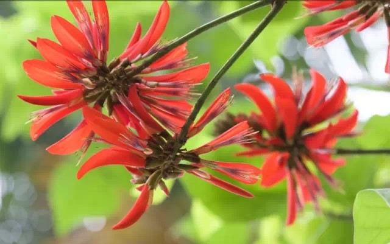

三月赏紫荆
举办时间：3月紫荆花盛开之时
话说北有武大樱花，南有华农紫荆。在华农校园里，三月是紫荆花的时代，独领风骚。
每年三月开始到华农赏紫荆的游人络绎不绝，在紫荆开放日当天人流量更能达到超十万。
为了打造“五湖四海一片林”的校园风貌，华农在全校范围有规划地种植不同品种的紫荆花，目前数量已超过5000株。“紫荆校园”已成为华农的一张文化名片。淡粉的，绯红的，嫩白的，娇滴滴的紫荆花开展了枝头，挂满了树丫，美得一塌糊涂。若是遇上春雨，花瓣随之飘落，可想象，落花缀小径，此情此景，若世外桃源，似人间仙境。要是再邀上几位好友，得意，得意。
阳春三月，姹紫嫣红
如同日本樱花般盛放的羊蹄甲，一簇簇花朵紧紧相拥，在春日里燃烧起如火如荼的激情。

2012年初，130棵樱花“落户”华农湿地公园。因为此樱花是由广州本土一公司研发的新品种，故命名为“中国红”，比日本樱花多了一分鲜艳。原来华农能一次满足两个愿望：羊蹄甲+樱花！
除了紫荆花，华南农业大学还有各种各样的美花噢~
黄花风铃木
簕杜鹃
